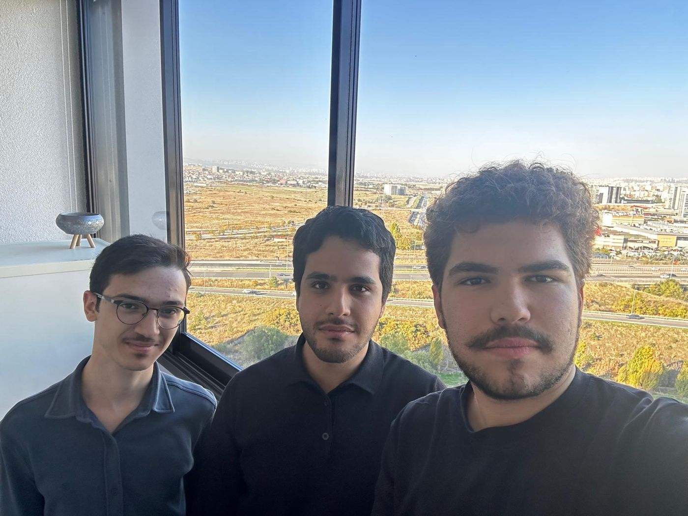

T01A · rpm
Motor / ESC
Motor başına akım ve devir
Programlanabilir güç kaynağı ve ESC telemetrisi (DShot)
İHA bant sonu test kabini · konsept
Seri üretilen İHA'lar için yapay zekâ destekli bant sonu test kabini. Her araç sahaya çıkmadan önce aynı prosedürle ölçülür, karara bağlanır ve kayda geçer.
Prototip geliştiriliyor · Ankara
Problem
Çoğu üreticide her İHA bir pilotla kısa bir test uçuşuna çıkıyor ya da teknisyen tarafından elle kontrol ediliyor.
Pilota ve hava koşullarına bağlı test, üretim arttıkça hattın en yavaş halkası oluyor.
Dengesiz pervane, zayıf lehim, gevşek konektör ve aşırı ısınan ESC kısa bir uçuşta çoğu zaman fark edilmiyor.
Test sonuçları sistematik olarak toplanmadığı için hatanın hangi aşamadan geldiği bulunamıyor.
Nasıl çalışır
Operatör banttan çıkan İHA'yı kabindeki modüler fikstüre yerleştirir.
Kabin altı testi otomatik çalıştırır; hedef süre ürün başına yaklaşık 5 dakika.
Yapay zekâ ölçümleri sağlam ürün profiliyle karşılaştırır: GEÇTİ ya da KALDI, olası nedeniyle birlikte.
Sonuç seri numarasıyla kalite paneline işlenir.
Testler
Motor başına akım ve devir
Programlanabilir güç kaynağı ve ESC telemetrisi (DShot)
Gaz kademelerinde toplam itki
Yük hücresiyle ölçülür, sağlam ürünlerin referans aralığıyla karşılaştırılır.
Dengesiz pervane, rulman sorunu
İvmeölçer ve mikrofonla motor bazında frekans analizi
Gevşek konektör, kötü lehim
Kısa titreşim altında telemetri, video ve IMU izlenir; sinyal kesilirse bağlantı gevşektir.
Sabit kanat ve VTOL'de servo açıları
Kamera ve görüntü işlemeyle komut verilen ve ölçülen açı karşılaştırılır.
Aşırı ısınan bileşen
Termal kamerayla mutlak sıcaklık yerine ısınma hızı ölçülür; kötü lehim ve arızalı faz daha hızlı ısınır.
Tanıtım
Konsept gösterimidir; görseller ve değerler temsilidir.
Yapay zekâ ve veri
| Seri no | Sonuç | Neden |
|---|---|---|
| RTF-2611-0047 | KALDI | M3 pervane dengesizliği |
| RTF-2611-0048 | GEÇTİ | — |
| RTF-2611-0049 | GEÇTİ | — |
| RTF-2611-0050 | KALDI | ESC-2 hızlı ısınma |
Modülerlik
FPV ve ticari platformlar · ilk odak
Hibrit platformlar
2 m kanat açıklığına kadar
Neden RTFLab
Günün her saatinde, aynı standartta test.
İade, garanti ve görev başarısızlığı maliyetleri azalır.
Her ürün için kayıtlı test raporu; savunma ve kurumsal müşterilere kalite kanıtı.
Orta ölçekli üretici kendi sistemini kurmadan otomatik teste geçer; büyük üretici her yeni hat için özel düzenek geliştirmez.
Robot kollu, proje bazlı çözümlere göre daha düşük maliyetli, modüler bir kabin.
İş modeli: kabin satışı ve kalite paneli ile yapay zekâ için yıllık yazılım lisansı.
Yol haritası
FPV ve küçük multirotor
Gerçek bir üretim hattında saha doğrulaması
VTOL, sabit kanat ve çoklu hat paneli
Çevresel ve dayanıklılık testleriyle uçtan uca İHA test merkezi

Ekip
İletişim
Pilot üretici olarak kabinin ilk saha kurulumunu birlikte planlayalım. Yatırımcı ve program görüşmelerine de açığız.